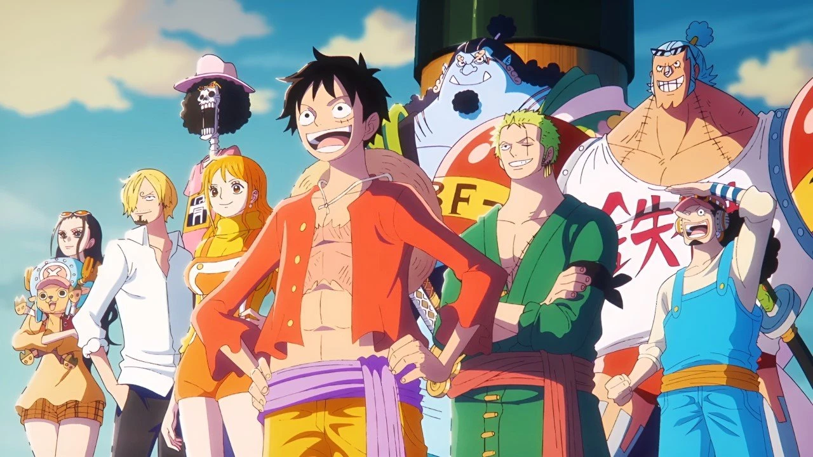

One Piece
A One Piece egy világszerte népszerű japán anime és manga, amelyet Eiichiro Oda alkotott. A történet főhőse Monkey D. Luffy, egy fiatal kalóz, aki arról álmodik, hogy megtalálja a legendás One Piece kincset és ezzel a Kalózkirály legyen. Luffy és csapata, izgalmas és veszélyes kalandok során járják be a Grand Line-t, miközben erős ellenfelekkel és titokzatos erőkkel találkoznak.
A One Piece több mint két évtizede hódítja meg a rajongók szívét összetett történetével, lenyűgöző világépítésével és szerethető karaktereivel. Akció, humor és érzelmek keveréke teszi igazán különlegessé ezt az epikus kalóztörténetet.
